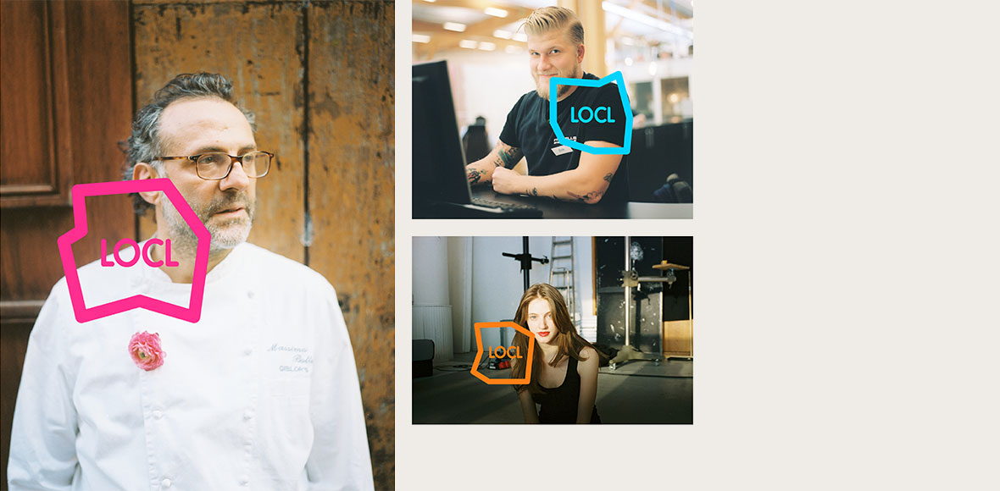
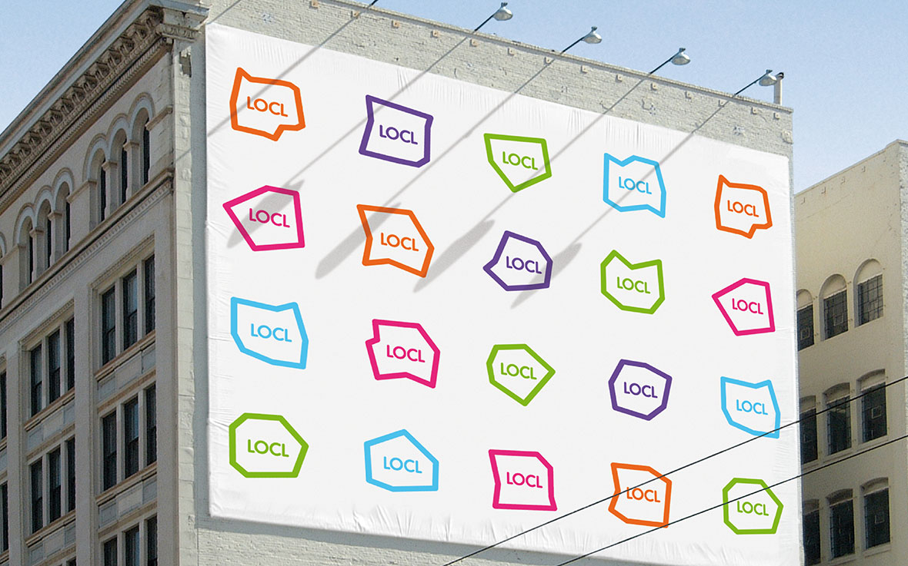
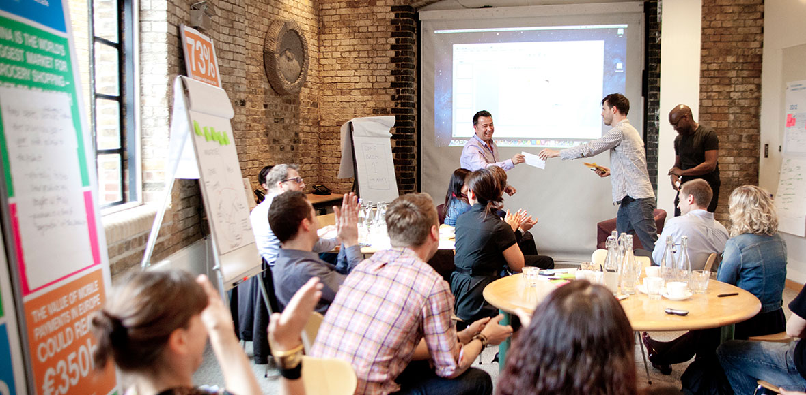

I worked with the innovation labs of a global credit card business, serving as the design lead from Wolff Olins. We helped them identify new products and services aimed at a traditionally underserved part of their market: merchants.
Working with the team from the lab, we created a process for continuous innovation. This included facilitating workshops, helping spot key shifts in the market and coming up with ways to make the most of them. We generated, prototyped and tested 15 ideas with customers, quickly refining what worked and ditching what didn't. This resulted in one product being built and launched in around a month.
LOCL was a mobile app that let users get the inside track on all the shops and restaurants around them, giving everyone the benefits of being 'a local'. This provided merchants with a way to entice nearby users with the latest deals and inside information, in turn generating more business. This was the first step in proving that the business was on the side of the people accepting payments, and not just those making them.
As well as the work within the lab, I designed the brand identity for LOCL, and collaborated closely with Ustwo to build and launch the iPhone app.
